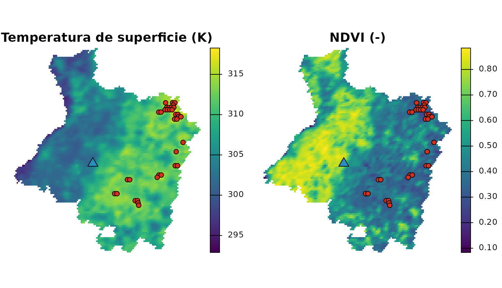
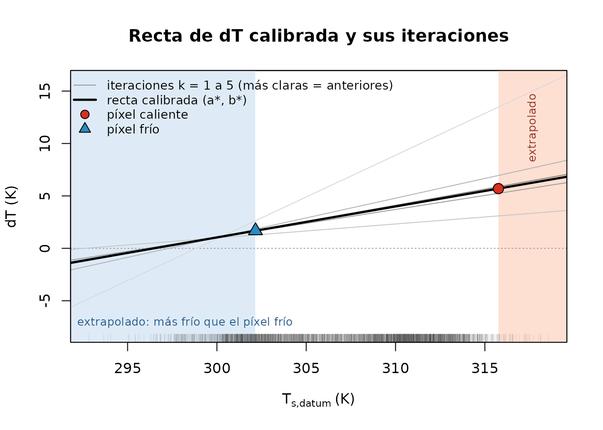
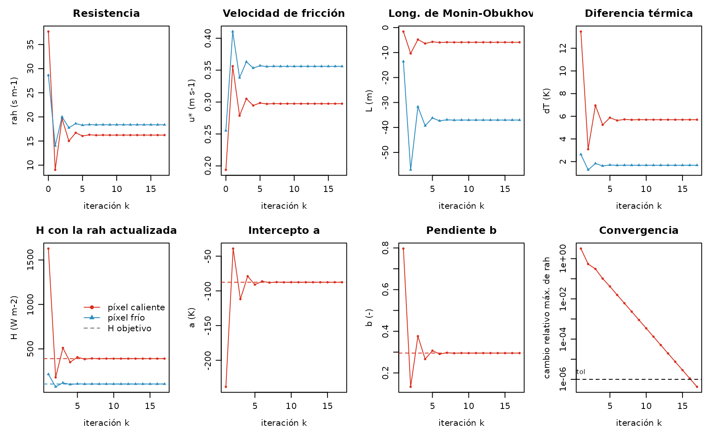
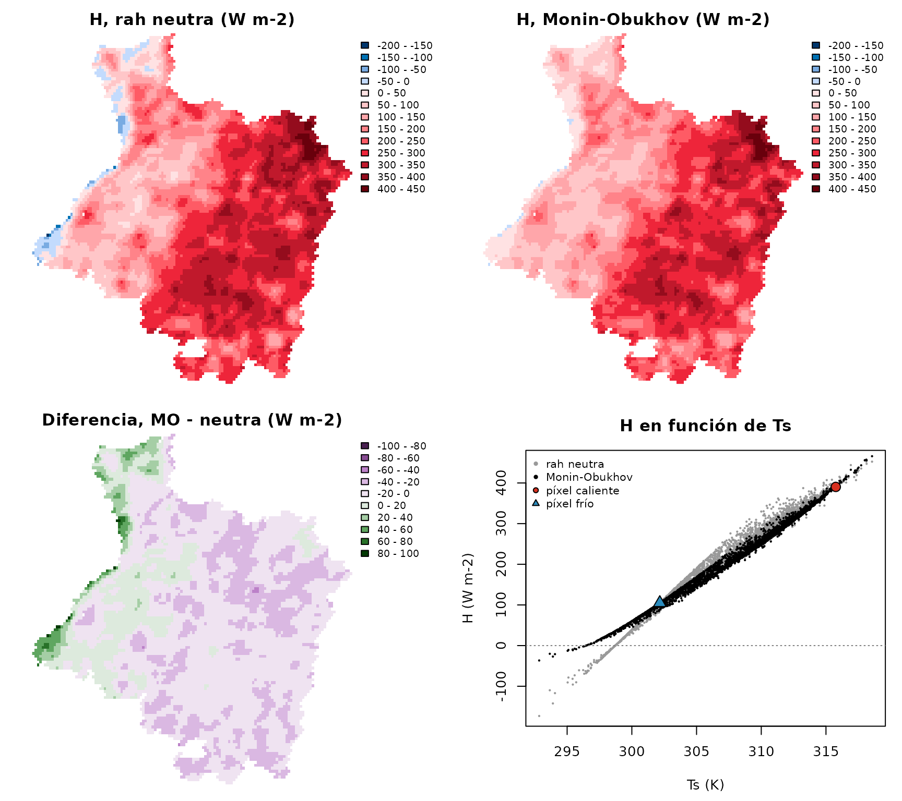
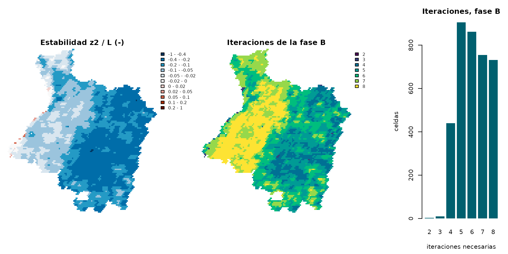

Píxeles ancla y la iteración de Monin–Obukhov (español)
Source:vignettes/articles/anclas-monin-obukhov.Rmd
anclas-monin-obukhov.RmdVersión en español del artículo Hot and cold anchors and the Monin–Obukhov iteration, pensada para la docencia. El código, los datos, las figuras y la verificación son los mismos; se tradujeron el texto, los comentarios del código y las etiquetas de las figuras. Las tablas que imprime R conservan los nombres en inglés del paquete.
El flujo de calor sensible
es el término más difícil de un balance de energía METRIC. Este artículo
explica, paso a paso, cómo lo estima METRIC (Allen et al., 2007): la
calibración interna con un píxel ancla caliente y uno frío, y la
iteración de Monin–Obukhov que corrige la resistencia aerodinámica por
la estabilidad atmosférica. Cada ecuación se ejecuta sobre la escena
MODIS de la provincia de Cauquenes incluida en el paquete (14 de febrero
de 2019; véase el artículo Example
scene: Cauquenes, en inglés) con las funciones exportadas de
EarthFlux, y la iteración se escribe a mano y se contrasta con
ef_calibrate_h().
Los números de ecuación y de página se refieren al manual SEBAL de Idaho de los autores de METRIC (Waters et al., 2002), contra el cual se verifican las formulaciones de EarthFlux.
Experimental e ilustrativo. EarthFlux es un paquete experimental y sus resultados no están validados. La escena no incluye datos meteorológicos ni modelo de elevación, por lo que este artículo usa una estación meteorológica horaria ilustrativa y una elevación uniforme ilustrativa (ambas inventadas para este artículo, aunque plausibles para el lugar y la fecha). Los números que siguen muestran cómo funciona el método; no son estimaciones de los flujos de Cauquenes.
Todo lo que sigue se ejecuta sin conexión a internet, a partir del paquete instalado.
1. Por qué H es difícil
En el momento del paso del satélite, el flujo de calor latente es el residuo del balance de energía en la superficie (Waters et al., 2002, ec. 1):
con la radiación neta , el flujo de calor del suelo y el flujo de calor sensible , todos en W m⁻². y se obtienen, con una incertidumbre conocida, del estado de la superficie (albedo, temperatura de superficie, emisividad, índices de vegetación) y de la geometría solar. es transportado por la turbulencia y se escribe como una ecuación de transferencia aerodinámica (bulk transfer) (Waters et al., 2002, p. 25, ec. 25):
donde es la densidad del aire (kg m⁻³), J kg⁻¹ K⁻¹ el calor específico del aire, la resistencia aerodinámica al transporte de calor (s m⁻¹) entre dos alturas sobre el plano de desplazamiento cero, m y m, y la diferencia de temperatura del aire entre esas dos alturas (K).
El atajo obvio, , con la temperatura de superficie terrestre del satélite y la temperatura del aire de una estación meteorológica, no funciona, por tres razones:
- La temperatura radiométrica no es la temperatura aerodinámica. El satélite ve una temperatura radiométrica: una mezcla de suelo y hojas al sol y a la sombra, ponderada por el ángulo de observación y la emisividad. La temperatura que impulsa la transferencia de calor es una temperatura aerodinámica en la fuente aparente de calor, dentro del dosel. Ambas pueden diferir en varios kelvin, y la diferencia depende de la cobertura, que es justamente lo que varía dentro de una escena.
- Los errores de son del tamaño de . es de apenas unos pocos kelvin. Un error de 1–2 K en (corrección atmosférica, emisividad, ángulo de observación) es un error de decenas de por ciento en .
- No hay temperatura del aire por píxel. Las estaciones son pocas, e incluso una red densa entrega la temperatura del aire sobre un pasto de referencia, no sobre cada predio.
La sensibilidad de a se lee en el factor (W m⁻² K⁻¹): con una densidad del aire cercana a 1,15 kg m⁻³ y resistencias de 10–50 s m⁻¹, cada kelvin de vale decenas de W m⁻² de (el valor en el píxel frío de la escena se calcula en la sección 2).
2. Calibración interna con dos píxeles ancla
La idea
METRIC, siguiendo a SEBAL (Bastiaanssen et al., 1998), nunca mide . Supone que, dentro de una escena, es una función lineal de la temperatura de superficie (Waters et al., 2002, p. 30, ec. 32):
y encuentra y a partir de dos píxeles cuyo se conoce por su balance de energía: los píxeles ancla. Las superficies calientes calientan más el aire que tienen encima, de modo que . es la temperatura de superficie referida a una elevación común (el datum), , con un gradiente térmico vertical (Waters et al., 2002, apéndice 12, ec. 12-7); en este artículo la elevación es uniforme y , de modo que . (El manual escribe , con la pendiente; EarthFlux llama al intercepto y a la pendiente.)
Como y se ajustan dentro de la imagen, los errores sistemáticos de (un sesgo de la corrección atmosférica, por ejemplo) se absorben en gran parte: depende de diferencias de , no de su valor absoluto. Esto es lo que significa la «calibración internalizada» (internalized calibration) del nombre de METRIC.
Los dos píxeles ancla (Waters et al., 2002, pp. 30–31, pasos 5a y 5b) son:
- el píxel frío: vegetación agrícola bien regada, con cobertura completa del suelo, que evapora 1,05 veces la tasa de la referencia de alfalfa (), de modo que con el calor latente de vaporización y la evapotranspiración de referencia instantánea de alfalfa expresada como flujo de masa;
- el píxel caliente: un predio agrícola seco y desnudo, donde la evaporación es nula (), de modo que toda la energía disponible va a :
Para cada píxel ancla se invierte la ecuación de transferencia para obtener el que produce su (Waters et al., 2002, p. 30, ec. 33):
y los dos puntos fijan la recta:
El problema es que depende de la estabilidad del aire, que a su vez depende del propio . Ese es el tema de la sección 3. Primero, los datos de entrada.
La escena y una estación meteorológica ilustrativa
El estado de la superficie es la escena incluida en el paquete, en su grilla sinusoidal nativa de 1 km. El núcleo numérico de EarthFlux trabaja con matrices simples, así que las capas se leen como matrices (una fila de la grilla por cada fila de la matriz):
library(EarthFlux)
r <- terra::unwrap(cauquenes_modis)
as_mat <- function(name) terra::as.matrix(r[[name]], wide = TRUE)
lst <- as_mat("lst") # K
albedo <- as_mat("albedo") # -
ndvi <- as_mat("ndvi") # -
lai <- as_mat("lai") # m2 m-2
emissivity <- as_mat("emissivity") # -
utc_hour <- as_mat("utc_hour") # h, hora de paso de cada celda
doy <- as_mat("doy")
inside <- !is.na(as_mat("flags_lst")) # celdas de la provincia
# Longitud y latitud de los centros de las celdas (grados)
lonlat <- terra::project(terra::xyFromCell(r, seq_len(terra::ncell(r))),
from = terra::crs(r), to = "EPSG:4326")
lon <- matrix(lonlat[, 1], terra::nrow(r), byrow = TRUE)
lat <- matrix(lonlat[, 2], terra::nrow(r), byrow = TRUE)
summary(as.vector(utc_hour))
#> Min. 1st Qu. Median Mean 3rd Qu. Max. NAs
#> 15.02 15.03 15.04 15.06 15.11 15.12 5885El paso del satélite ocurre cerca de las 15:02 UTC (10:12 hora solar media local); todas las celdas de la provincia fueron observadas en la misma pasada de Terra, entre las 15:01 y las 15:07 UTC, a 12–18 grados del nadir.
La escena no tiene modelo de elevación. Solo para este
artículo, la elevación se fija en 150 m uniformes,
aproximadamente la elevación de la ciudad de Cauquenes. Esta es la
situación del preset "idaho2002_flat": sin gradiente
térmico vertical
()
y una sola transmisividad de onda corta para toda la escena.
z_scene <- 150 # m, ilustrativa, uniforme
elevation <- ifelse(inside, z_scene, NA)
pressure <- ef_air_pressure(elevation) # kPaLos datos meteorológicos provienen de una estación horaria ilustrativa (valores inventados para este artículo, coherentes con una mañana despejada de verano en el interior de la provincia; no son observaciones): temperatura del aire, punto de rocío, velocidad del viento a 2 m sobre pasto y radiación solar para las cuatro horas en torno al paso del satélite. A partir de ellos se calcula la evapotranspiración de referencia horaria de alfalfa con la ecuación estandarizada de ASCE (ASCE-EWRI, 2005):
station <- list(lon = -72.35, lat = -35.97, elevation = z_scene)
wx <- data.frame(
utc_start = 13:16, # hora 13:00-14:00 UTC, ...
air_temperature = c(19.0, 21.5, 24.0, 26.0), # grados C
dewpoint = c(10.0, 10.0, 10.2, 10.2), # grados C
wind_2m = c(1.8, 2.2, 2.6, 3.0), # m s-1
solar_radiation = c(2.10, 2.62, 2.98, 3.18) # MJ m-2 h-1
)
wx$utc_mid <- wx$utc_start + 0.5
deg <- pi / 180
ra <- ef_ra_period(lat = station$lat * deg, lon = station$lon * deg,
doy = 45, utc_mid = wx$utc_mid, period_hours = 1,
standard = "asce")
ea <- ef_ea_dewpoint(wx$dewpoint)
rn_ref <- ef_ref_net_radiation(
solar_radiation = wx$solar_radiation,
clear_sky_radiation = ef_rso(ra, station$elevation),
vapour_pressure = ea, air_temperature = wx$air_temperature,
timestep = "hourly", standard = "asce"
)$rn
daytime <- rn_ref > 0
g_ref <- ef_ref_soil_heat_flux(rn_ref, reference = "alfalfa",
timestep = "hourly", standard = "asce",
daytime = daytime)
wx$etr <- ef_ref_et(
net_radiation = rn_ref, soil_heat_flux = g_ref,
air_temperature = wx$air_temperature, wind_speed_2m = wx$wind_2m,
vapour_pressure_deficit = ef_es(wx$air_temperature) - ea,
slope = ef_es_slope(wx$air_temperature),
psychrometric = ef_psychrometric(ef_air_pressure(station$elevation)),
reference = "alfalfa", timestep = "hourly", standard = "asce",
daytime = daytime
)$et_ref
wx
#> utc_start air_temperature dewpoint wind_2m solar_radiation utc_mid etr
#> 1 13 19.0 10.0 1.8 2.10 13.5 0.4283063
#> 2 14 21.5 10.0 2.2 2.62 14.5 0.5857801
#> 3 15 24.0 10.2 2.6 2.98 15.5 0.7257824
#> 4 16 26.0 10.2 3.0 3.18 16.5 0.8347101Como en los presets de earthflux(), cada celda toma los
valores a su propia hora de paso, por interpolación lineal entre los
puntos medios de las horas:
Radiación, flujo de calor del suelo y rugosidad
Las opciones son las del preset "idaho2002_flat" (véase
ef_preset("idaho2002_flat")), salvo que los datos
meteorológicos provienen de la estación ilustrativa anterior y no de un
forzante regionalizado.
preset <- ef_preset("idaho2002_flat")La rugosidad para el momentum se obtiene del LAI, (Waters et al., 2002, p. 27, ec. 31a), con el mínimo de 0,005 m del preset, y la velocidad del viento a la altura de mezcla m se extrapola desde la estación con un perfil logarítmico sobre su pasto (Waters et al., 2002, p. 26, ecs. 27 y 29):
zom <- pmax(ef_zom(lai = lai, method = "lai")$zom, preset$roughness$zom_min)
w <- preset$wind
u_blend <- ef_blending_wind(wind_2m, height = w$height,
zom_station = w$zom_station,
d_station = w$d_station,
blending_height = w$blending_height)
range(u_blend, na.rm = TRUE) # m s-1 a 200 m
#> [1] 4.654201 4.733223Los píxeles ancla se seleccionan antes de la radiación neta, porque
la radiación de onda larga incidente de los presets usa la temperatura
de superficie del píxel frío (Waters et al., 2002, p. 23, ec. 23). Los
candidatos deben pasar el control de calidad estricto de los presets:
ningún flag warning o critical (bits 6–14, y
el bit 16, EF_SURF_VIEW_ANGLE_HIGH: una LST observada a más
de 40 grados del nadir; ninguna en esta escena) y ningún LAI asignado
(bit 15, EF_SURF_LAI_ASSIGNED) en las palabras de flags de
las variables de superficie, todas las subceldas de 500 m de los insumos
agregados válidas y todos los insumos definidos.
geo <- ef_solar_geometry(doy = doy, utc_hour = utc_hour, lat = lat * deg,
lon = lon * deg, slope = 0, aspect = 0)
qa <- inside & !is.na(lst) & !is.na(albedo) & !is.na(ndvi) & !is.na(lai) &
!is.na(emissivity) & !is.na(etr_inst) & !is.na(geo$cos_zenith)
excluded_bits <- sum(2^(6:16))
for (l in c("lst", "albedo", "ndvi", "lai", "emissivity")) {
word <- as_mat(paste0("flags_", l))
qa <- qa & !is.na(word) & bitwAnd(word, excluded_bits) == 0
}
qa <- qa & as_mat("valid_fraction_albedo") == 1 &
as_mat("valid_fraction_lai") == 1
qa[is.na(qa)] <- FALSE
c(province = sum(inside), usable_for_anchors = sum(qa))
#> province usable_for_anchors
#> 3779 3214Los criterios de selección del preset (CANDIDATA,
decisión M5-23) traducen la intención física del manual (Waters et al.,
2002, pp. 23, 30–31 y apéndice 7) a umbrales para celdas MODIS de 1 km:
candidatos fríos entre el 10 % de mayor NDVI, con un albedo de cielo
blanco entre 0,14 y 0,26 (lo que deja fuera los doseles forestales
oscuros); candidatos calientes entre el 10 % de menor NDVI, con un
albedo entre 0,18 y 0,35 (predios secos, no roca oscura); un vecindario
homogéneo (desviación estándar de
de a lo más 1,5 K en 3 × 3 celdas); y, entre ellos, el 20 % más frío y
el 20 % más caliente. El valor de cada ancla es la media de sus
píxeles.
ext <- terra::ext(r)
anchors <- ef_select_anchors(
lst, ndvi, albedo, lai = lai, qa = qa, elevation = elevation,
utc_hour = utc_hour, criteria = preset$anchors$criteria,
relax = preset$anchors$relax, aggregate = preset$anchors$aggregate,
cell_size = terra::res(r)[1],
origin = c(terra::xmin(ext), terra::ymax(ext)),
crs = terra::crs(r, proj = TRUE)
)
funnel <- anchors$funnel
funnel[funnel$filter != "total", c("type", "filter", "n")]
#> type filter n
#> 2 cold usable 3214
#> 3 cold valid 3214
#> 4 cold percentile_domain 3214
#> 5 cold ndvi >= p0.9 322
#> 6 cold albedo between [0.14, 0.26] 1
#> 7 cold homogeneity 1
#> 8 cold selected 1
#> 10 hot usable 3214
#> 11 hot valid 3214
#> 12 hot percentile_domain 3214
#> 13 hot ndvi <= p0.1 322
#> 14 hot ndvi > 0 322
#> 15 hot albedo between [0.18, 0.35] 292
#> 16 hot homogeneity 173
#> 17 hot selected 35El embudo muestra qué pocas celdas de una escena de 1 km se parecen a
un predio bien regado y con cobertura completa: 322 celdas pasan el
percentil de NDVI, pero la banda de albedo propia de un cultivo deja 1
de ellas, y al final queda 1 píxel como píxel frío (flag
EF_ANCHOR_SINGLE_PIXEL).
Ahora la radiación neta y el flujo de calor del suelo (transmisividad de onda corta a partir de la elevación, Waters et al., 2002, p. 18, ec. 11; onda larga incidente con la temperatura del píxel frío, ecs. 21–23; de Bastiaanssen, ec. 24):
t_cold <- anchors$calibration_points$lst[
anchors$calibration_points$type == "cold"]
tau <- ef_tau_sw(elevation = z_scene, method = "elevation")
rs <- ef_rs_in(cos_zenith = geo$cos_zenith,
cos_incidence = geo$cos_incidence,
inv_distance = geo$inv_distance, tau_beam = tau$total,
tau_diffuse = 0, slope = 0, method = "modelled")
rl_in <- ef_rl_in(temperature = t_cold,
atm_emissivity = ef_atm_emissivity(tau$total))
rl_out <- ef_rl_out(lst, emissivity)
rn <- ef_net_radiation(rs_in = rs$total, albedo = albedo, rl_in = rl_in,
rl_out = rl_out, emissivity = emissivity)
g <- ef_g(rn, lst = lst, albedo = albedo, ndvi = ndvi,
method = preset$soil_heat$method)$gLas condiciones de borde
ef_anchor_conditions() agrega a cada punto de
calibración su
,
su
,
los valores objetivo de
y
,
y los insumos del cálculo aerodinámico
(,
viento a 200 m, presión):
a_opt <- preset$anchors
lambda <- ef_lambda(method = preset$lambda$method)
anchors <- ef_anchor_conditions(
anchors, rn = rn, g = g, etr_inst = etr_inst, lambda = lambda,
etrf_cold = a_opt$etrf_cold, etrf_hot = a_opt$etrf_hot,
reference = "alfalfa", source = a_opt$conditions_source,
status = a_opt$conditions_status, etr_source = "station",
zom = zom, u_blend = u_blend, pressure = pressure
)
cp_tab <- anchors$calibration_points
cp_tab[, c("type", "n_pixels", "lst", "ndvi", "albedo", "rn", "g",
"le_target", "h_target", "zom", "u_blend")]
#> type n_pixels lst ndvi albedo rn g le_target
#> 1 cold 1 302.1600 0.8174000 0.1402500 625.9263 49.41471 471.5484
#> 2 hot 35 315.7583 0.3026657 0.1969643 501.6956 111.37051 0.0000
#> h_target zom u_blend
#> 1 104.9632 0.111600000 4.66291
#> 2 390.3251 0.009244286 4.72021En el píxel frío, la mayor parte de la energía disponible se evapora () y es pequeño; en el píxel caliente, toda ella va a .
La calibración
ef_calibrate_h() ejecuta la calibración completa: la
iteración en los píxeles ancla (fase A, sección 3) y el flujo de calor
sensible de cada celda con los coeficientes calibrados (fase B). La
configuración es la del preset, escrita explícitamente en él
(ef_h_control(), decisión M2-11):
sh <- preset$sensible_heat
sh$control[c("blending_height", "z1", "z2", "stable_psi_m_height", "tol",
"maxit", "pixel_tol", "pixel_maxit")]
#> $blending_height
#> [1] 200
#>
#> $z1
#> [1] 0.1
#>
#> $z2
#> [1] 2
#>
#> $stable_psi_m_height
#> [1] 2
#>
#> $tol
#> [1] 1e-06
#>
#> $maxit
#> [1] 100
#>
#> $pixel_tol
#> [1] 1e-05
#>
#> $pixel_maxit
#> [1] 100
cal <- ef_calibrate_h(
anchors, control = sh$control, lapse_rate = sh$lapse_rate,
datum_elevation = z_scene,
pixels = list(lst = lst, elevation = elevation, zom = zom,
u_blend = u_blend, pressure = pressure, rn = rn, g = g)
)
c(a = cal$a, b = cal$b, iterations = cal$iterations,
converged = cal$converged)
#> a b iterations converged
#> -87.5585185 0.2953382 17.0000000 1.0000000
cal$anchors[, c("type", "ts_datum", "h_target", "dt", "rah", "u_star",
"obukhov_length", "h")]
#> type ts_datum h_target dt rah u_star obukhov_length h
#> 1 hot 315.7583 390.3251 5.696970 16.22914 0.2974710 -5.886905 390.3251
#> 2 cold 302.1600 104.9632 1.680877 18.37427 0.3559409 -37.033272 104.9632Cada píxel ancla reproduce exactamente su objetivo. En el píxel frío, = 62 W m⁻² K⁻¹: un sesgo de 1 K en allí sería un sesgo de 62 W m⁻² en , o 0,09 mm h⁻¹ de evapotranspiración; por eso se calibra en lugar de medirse. ¿Dónde están los píxeles ancla y cómo se ve la recta calibrada?
# Solo para mostrar: proyectar a coordenadas geográficas (el cálculo se
# mantiene en la grilla nativa) y recortar los márgenes vacíos.
to_lonlat <- function(x, method = "bilinear") {
terra::trim(terra::project(x, "EPSG:4326", method = method))
}
as_rast <- function(m, name) {
x <- terra::rast(r, nlyrs = 1)
terra::values(x) <- as.vector(t(m))
names(x) <- name
x
}
px <- anchors$pixels
pts_xy <- terra::crds(terra::project(
terra::vect(px[, c("x", "y")], geom = c("x", "y"), crs = terra::crs(r)),
"EPSG:4326"
))
add_anchors <- function() {
hot <- px$type == "hot"
points(pts_xy[hot, , drop = FALSE], pch = 21, bg = "#D7301F", cex = 1)
points(pts_xy[!hot, , drop = FALSE], pch = 24, bg = "#2B8CBE", cex = 1.6)
}
terra::plot(
to_lonlat(c(as_rast(lst, "lst"), as_rast(ndvi, "ndvi"))),
main = c("Temperatura de superficie (K)", "NDVI (-)"),
nc = 2, axes = FALSE, fun = add_anchors, mar = c(1, 1, 2, 4)
)
Los píxeles ancla sobre la temperatura de superficie y sobre el NDVI de la escena: el píxel frío (triángulo azul) y los 35 píxeles del ancla caliente (círculos rojos), cuya media es el punto de calibración caliente. Los píxeles calientes están entre las celdas más cálidas y menos verdes, en el oriente de la provincia. El píxel frío es una celda verde (NDVI 0,82) del poniente, pero su albedo, 0,1403, está apenas dentro del límite inferior de 0,14 que usa el preset para dejar fuera los doseles forestales oscuros: a 1 km bien puede ser una mezcla de plantación forestal y predios agrícolas. Es el tipo de compromiso al que vuelve la sección 4. Las celdas más frescas de la escena, a lo largo de la costa, son más frías que el píxel frío.
ts_all <- as.vector(cal$pixels$ts_datum)
an <- cal$anchors
ts_hot <- an$ts_datum[an$type == "hot"]
ts_cold <- an$ts_datum[an$type == "cold"]
iter_col <- grDevices::gray.colors(5, start = 0.85, end = 0.5)
plot(NA, xlim = range(ts_all, na.rm = TRUE), ylim = c(-8, 16),
xlab = expression(T[s*","*datum] ~ "(K)"), ylab = "dT (K)",
main = "Recta de dT calibrada y sus iteraciones")
rect(ts_hot, -20, 400, 40, col = "#FEE0D2", border = NA)
rect(0, -20, ts_cold, 40, col = "#DEEBF7", border = NA)
text(par("usr")[1], -7, adj = c(-0.03, 0.5), cex = 0.8, col = "#2B5C8A",
"extrapolado: más frío que el píxel frío")
text(mean(c(ts_hot, par("usr")[2])), 11.5, srt = 90, cex = 0.8,
col = "#99341F", "extrapolado")
abline(h = 0, col = "grey60", lty = 3)
for (k in 1:5) {
abline(a = cal$trace$a[k], b = cal$trace$b[k], col = iter_col[k])
}
abline(a = cal$a, b = cal$b, lwd = 2.5)
points(an$ts_datum, an$dt, pch = c(21, 24), cex = 1.6,
bg = c("#D7301F", "#2B8CBE"))
rug(ts_all, col = grDevices::adjustcolor("grey20", 0.15))
box()
legend("topleft", bty = "n", cex = 0.85,
legend = c("iteraciones k = 1 a 5 (más claras = anteriores)",
"recta calibrada (a*, b*)", "píxel caliente", "píxel frío"),
lty = c(1, 1, NA, NA), lwd = c(1, 2.5, NA, NA),
col = c("grey60", "black", "black", "black"),
pch = c(NA, NA, 21, 24), pt.bg = c(NA, NA, "#D7301F", "#2B8CBE"),
pt.cex = 1.3)
Los píxeles ancla en el espacio . Cada iteración de la sección 3 entrega un par distinto y, por lo tanto, una recta distinta (gris; la primera es la de mayor pendiente); la recta final (negra) pasa por ambos píxeles ancla. Las marcas sobre el eje (rug) señalan la temperatura de cada celda de la escena: muchas celdas son más frías que el píxel frío (zona azul; bajo unos 296,5 K su , y por ende su , es negativo) y algunas son más calientes que el píxel caliente (zona roja). En ambas regiones se extrapola.
c(below_cold = sum(ts_all < an$ts_datum[an$type == "cold"], na.rm = TRUE),
above_hot = sum(ts_all > an$ts_datum[an$type == "hot"], na.rm = TRUE),
cells = sum(!is.na(ts_all)))
#> below_cold above_hot cells
#> 679 35 3707Estas celdas llevan los flags EF_H_DT_EXTRAPOLATED_COLD
y EF_H_DT_EXTRAPOLATED_HOT; se calculan con la misma recta,
sin truncar.
3. La iteración de Monin–Obukhov
La resistencia aerodinámica
Con un perfil logarítmico del viento (aire neutro), la velocidad de fricción de un píxel se obtiene de la velocidad del viento a la altura de mezcla m, donde se supone que el viento es el mismo en toda la escena, y de la rugosidad del píxel (Waters et al., 2002, p. 27, ec. 30):
con la constante de von Kármán . La resistencia al transporte de calor entre m y m es (Waters et al., 2002, p. 26, ec. 26):
Estabilidad
En un día soleado la superficie está mucho más caliente que el aire: la flotabilidad se suma a la turbulencia mecánica (aire inestable), el calor se evacua más rápido y es menor que en aire neutro. Sobre un predio regado y fresco rodeado de terreno seco, el aire cálido puede fluir sobre una superficie más fría (advección): el aire es estable, la turbulencia se amortigua y es mayor. La longitud de Monin–Obukhov (m) mide el equilibrio entre las dos fuentes de turbulencia (Waters et al., 2002, p. 32, ec. 34):
con m s⁻². cuando (inestable), cuando (estable) y en aire neutro. Las correcciones de estabilidad (momentum) y (calor) son funciones de (Waters et al., 2002, pp. 32–33):
- inestable (; ecs. 35–37), con :
- estable (; ecs. 38–39):
Nótese que la corrección estable del momentum a la altura de mezcla
se evalúa con
y no con
:
así está escrita la ec. 38 del manual, y es el valor por defecto
stable_psi_m_height = 2 de ef_h_control()
(decisión SH-11). Con un píxel frío estable,
hace divergir la iteración en las escenas de prueba del paquete,
mientras que
converge.
La velocidad de fricción y la resistencia corregidas son (Waters et al., 2002, p. 33, ec. 40, y p. 34, ec. 41):
El ciclo iterativo
necesita
,
necesita
y
necesita
:
la calibración es una iteración de punto fijo (Waters et al., 2002,
pp. 25–34, figura 4 y apéndice 8). En EarthFlux
(?ef_calibrate_h):
- Inicio (): y neutros en cada píxel ancla, .
- Densidad del aire a la temperatura del aire cerca de la superficie, (Waters et al., 2002, p. 31, paso 6).
- en cada píxel ancla (ec. 33), y la recta que pasa por ambos.
- , igual al objetivo en los píxeles ancla por construcción.
- a partir de , , y ; luego , y los nuevos y .
- Detenerse cuando el cambio relativo de
sea menor que
tolen ambos píxeles ancla.
El manual itera «until the successive values for dT_hot and rah at
the hot pixel have stabilized» [hasta que los valores sucesivos de
dT_hot y rah en el píxel caliente se hayan estabilizado] (p. 34),
típicamente en 3 a 7 iteraciones (apéndice 8). La tolerancia es una
decisión de diseño de EarthFlux (decisión M2-11):
tol = 1e-6 sobre el cambio relativo de
,
porque las celdas heredan cualquier desajuste que quede en los píxeles
ancla. Después del ciclo, los pasos 1–2 se repiten una vez con la
final (cierre), de modo que los píxeles ancla reproduzcan exactamente
sus objetivos.
Fase B. Con
fijos,
y
de cada celda quedan fijos, y cada celda itera solo su propia corrección
de estabilidad,
,
partiendo de la condición neutra, hasta que el cambio relativo de su
sea menor que pixel_tol
().
La iteración a mano
Las funciones de estabilidad y
son internas de EarthFlux, por lo que aquí se escriben a partir de las
ecuaciones anteriores. La velocidad de fricción y la resistencia usan
las funciones exportadas ef_ustar() y
ef_rah(), y las constantes son las que registra
ef_calibrate_h().
ctrl <- cal$control
k_vk <- cal$constants$von_karman # 0.41
g0 <- cal$constants$gravity # 9.81 m s-2
cp <- cal$constants$cp # 1004 J kg-1 K-1
obukhov <- function(rho, u_star, ts, h) {
ifelse(h == 0, Inf, -rho * cp * u_star^3 * ts / (k_vk * g0 * h))
}
psi_m <- function(z, L) { # ecs. 35 y 38
zeta <- z / L
x <- (1 - 16 * pmin(zeta, 0))^0.25
ifelse(zeta < 0,
2 * log((1 + x) / 2) + log((1 + x^2) / 2) - 2 * atan(x) + pi / 2,
-5 * zeta)
}
psi_h <- function(z, L) { # ecs. 36 y 39
zeta <- z / L
x <- (1 - 16 * pmin(zeta, 0))^0.25
ifelse(zeta < 0, 2 * log((1 + x^2) / 2), -5 * zeta)
}
# Un paso de estabilidad: H -> L -> psi -> u* -> rah
stability_step <- function(rho, u_star, ts, h, u200, zom) {
L <- obukhov(rho, u_star, ts, h)
z_m <- ifelse(L > 0, ctrl$stable_psi_m_height, ctrl$blending_height)
u_new <- ef_ustar(u200, zom, blending_height = ctrl$blending_height,
psi_m = psi_m(z_m, L))
rah_new <- ef_rah(u_new, z1 = ctrl$z1, z2 = ctrl$z2,
psi_h_z2 = psi_h(ctrl$z2, L),
psi_h_z1 = psi_h(ctrl$z1, L))
list(L = L, u_star = u_new, rah = rah_new)
}La fase A en los dos píxeles ancla, registrando cada iteración:
p <- cp_tab[match(c("hot", "cold"), cp_tab$type), ]
ts_datum <- ef_ts_datum(p$lst, p$elevation, datum_elevation = z_scene,
lapse_rate = sh$lapse_rate)
h_target <- p$rn - p$g - p$le_target
u_star <- ef_ustar(p$u_blend, p$zom, blending_height = ctrl$blending_height)
rah <- ef_rah(u_star, z1 = ctrl$z1, z2 = ctrl$z2)
dt <- c(0, 0)
hist_a <- data.frame(iteration = 0, a = NA, b = NA,
dt_hot = 0, dt_cold = 0, L_hot = Inf, L_cold = Inf,
u_star_hot = u_star[1], u_star_cold = u_star[2],
rah_hot = rah[1], rah_cold = rah[2],
h_next_hot = NA, h_next_cold = NA, change = NA)
for (k in seq_len(ctrl$maxit)) {
rho <- ef_air_density(p$pressure, p$lst - dt) # paso 1
dt <- h_target * rah / (rho * cp) # paso 2
co <- ef_dt_coef(ts_datum[1], ts_datum[2], dt[1], dt[2])
h <- ef_sensible_heat(rho, co$a + co$b * ts_datum, rah) # paso 3
st <- stability_step(rho, u_star, p$lst, h, p$u_blend, p$zom) # paso 4
change <- max(abs(st$rah - rah) / st$rah) # paso 5
u_star <- st$u_star
rah <- st$rah
hist_a <- rbind(hist_a, data.frame(
iteration = k, a = co$a, b = co$b, dt_hot = dt[1], dt_cold = dt[2],
L_hot = st$L[1], L_cold = st$L[2],
u_star_hot = u_star[1], u_star_cold = u_star[2],
rah_hot = rah[1], rah_cold = rah[2],
# H que daría el dT actual con la resistencia actualizada
h_next_hot = rho[1] * cp * dt[1] / rah[1],
h_next_cold = rho[2] * cp * dt[2] / rah[2],
change = change
))
if (change < ctrl$tol) break
}
# Cierre: pasos 1-2 con la resistencia final
rho <- ef_air_density(p$pressure, p$lst - dt)
dt <- h_target * rah / (rho * cp)
co <- ef_dt_coef(ts_datum[1], ts_datum[2], dt[1], dt[2])
signif(head(hist_a[, c("iteration", "a", "b", "dt_hot", "dt_cold", "L_hot",
"L_cold", "rah_hot", "rah_cold", "change")], 8), 4)
#> iteration a b dt_hot dt_cold L_hot L_cold rah_hot rah_cold
#> 1 0 NA NA 0.000 0.000 Inf Inf 37.690 28.63
#> 2 1 -238.20 0.7971 13.470 2.634 -1.600 -13.57 9.034 14.00
#> 3 2 -39.05 0.1335 3.092 1.277 -10.370 -56.96 19.640 20.01
#> 4 3 -111.90 0.3764 6.952 1.833 -4.797 -31.72 15.010 17.75
#> 5 4 -78.89 0.2665 5.246 1.623 -6.379 -39.32 16.710 18.61
#> 6 5 -91.01 0.3068 5.875 1.703 -5.709 -36.21 16.050 18.28
#> 7 6 -86.24 0.2910 5.629 1.673 -5.957 -37.35 16.300 18.41
#> 8 7 -88.07 0.2970 5.723 1.684 -5.860 -36.91 16.200 18.36
#> change
#> 1 NA
#> 2 3.172000
#> 3 0.540000
#> 4 0.308800
#> 5 0.102200
#> 6 0.041650
#> 7 0.015650
#> 8 0.006067La primera iteración está muy lejos de la solución. Con la resistencia neutra del píxel caliente, de superficie lisa, 37,7 s m⁻¹, el píxel caliente necesita un = 13,5 K para transportar su ; un así, con esa resistencia, implica un aire muy inestable ( = -1,6 m), la resistencia cae a 9 s m⁻¹, el siguiente resulta demasiado pequeño, y así sucesivamente: las iteraciones oscilan en torno al punto fijo con una amplitud decreciente.
Contraste con ef_calibrate_h(). El
ciclo escrito a mano reproduce el número de iteraciones, toda la traza y
los coeficientes calibrados:
mine <- hist_a[-1, ]
c(iterations_equal = nrow(mine) == cal$iterations,
max_rel_diff_trace = max(
abs(mine$a - cal$trace$a) / abs(cal$trace$a),
abs(mine$b - cal$trace$b) / abs(cal$trace$b),
abs(mine$rah_hot - cal$trace$rah_hot) / cal$trace$rah_hot,
abs(mine$rah_cold - cal$trace$rah_cold) / cal$trace$rah_cold,
abs(mine$L_hot - cal$trace$obukhov_length_hot) /
abs(cal$trace$obukhov_length_hot)
),
a_diff = co$a - cal$a, b_diff = co$b - cal$b)
#> iterations_equal max_rel_diff_trace a_diff b_diff
#> 1.000000e+00 2.866581e-15 1.136868e-13 -3.885781e-16La fase B para cada celda de la escena, con fijos. Cada celda parte de la condición neutra y se detiene cuando su propia ha convergido:
v <- function(m) as.vector(m)
dt_px <- cal$a + cal$b * ef_ts_datum(v(lst), v(elevation), z_scene,
sh$lapse_rate)
rho_px <- ef_air_density(v(pressure), v(lst) - dt_px)
u_px <- ef_ustar(v(u_blend), v(zom), blending_height = ctrl$blending_height)
rah_px <- ef_rah(u_px, z1 = ctrl$z1, z2 = ctrl$z2)
rah_neutral <- rah_px
n_iter <- ifelse(is.na(rah_px), NA, 0L)
active <- which(!is.na(rah_px))
for (k in seq_len(ctrl$pixel_maxit)) {
if (length(active) == 0) break
i <- active
h_px <- rho_px[i] * cp * dt_px[i] / rah_px[i]
st <- stability_step(rho_px[i], u_px[i], v(lst)[i], h_px,
v(u_blend)[i], v(zom)[i])
change <- abs(st$rah - rah_px[i]) / st$rah
u_px[i] <- st$u_star
rah_px[i] <- st$rah
n_iter[i] <- k
active <- i[change >= ctrl$pixel_tol]
}
h_mo <- ef_sensible_heat(rho_px, dt_px, rah_px)
c(cells = sum(!is.na(h_mo)),
same_missing_cells = identical(is.na(h_mo), is.na(v(cal$pixels$h))),
max_abs_diff_h = max(abs(h_mo - v(cal$pixels$h)), na.rm = TRUE),
same_iterations = all(n_iter == v(cal$pixels$iterations), na.rm = TRUE))
#> cells same_missing_cells max_abs_diff_h same_iterations
#> 3.706000e+03 1.000000e+00 2.842171e-13 1.000000e+00Ambas fases escritas a mano entregan las mismas iteraciones, los
mismos coeficientes y el mismo
en cada celda que ef_calibrate_h(), salvo errores de
redondeo (diferencias de
o menos). El ciclo anterior es, por lo tanto, una descripción exacta y
legible de lo que hace la función.
Convergencia en los píxeles ancla
col_hc <- c(hot = "#D7301F", cold = "#2B8CBE")
it <- hist_a$iteration
panel <- function(y_hot, y_cold, main, ylab, target = NULL, log = "",
from = 0) {
keep <- it >= from
rng <- range(c(y_hot[keep], y_cold[keep], target), na.rm = TRUE)
plot(it[keep], y_hot[keep], type = "o", pch = 16, cex = 0.6,
col = col_hc["hot"], ylim = rng, log = log, main = main,
xlab = "iteración k", ylab = ylab)
if (!is.null(y_cold)) {
lines(it[keep], y_cold[keep], type = "o", pch = 17, cex = 0.6,
col = col_hc["cold"])
}
if (!is.null(target)) abline(h = target, lty = 2, col = col_hc)
}
op <- par(mfrow = c(2, 4), mar = c(4, 4.2, 2.5, 0.8), mgp = c(2.4, 0.8, 0))
panel(hist_a$rah_hot, hist_a$rah_cold, "Resistencia", "rah (s m-1)")
panel(hist_a$u_star_hot, hist_a$u_star_cold, "Velocidad de fricción",
"u* (m s-1)")
panel(hist_a$L_hot, hist_a$L_cold, "Long. de Monin-Obukhov", "L (m)",
from = 1)
panel(hist_a$dt_hot, hist_a$dt_cold, "Diferencia térmica", "dT (K)",
from = 1)
panel(hist_a$h_next_hot, hist_a$h_next_cold,
"H con la rah actualizada", "H (W m-2)", target = h_target, from = 1)
legend("right", bty = "n", legend = c("píxel caliente", "píxel frío",
"H objetivo"),
col = c(col_hc, "grey40"), lty = c(1, 1, 2), pch = c(16, 17, NA))
panel(hist_a$a, NULL, "Intercepto a", "a (K)", target = cal$a, from = 1)
panel(hist_a$b, NULL, "Pendiente b", "b (-)", target = cal$b, from = 1)
panel(hist_a$change, NULL, "Convergencia", "cambio relativo máx. de rah",
log = "y", from = 1)
abline(h = ctrl$tol, lty = 2)
text(1, ctrl$tol, "tol", pos = 3, cex = 0.8)
par(op)Fase A de la calibración, iteración por iteración, en el píxel
caliente (rojo) y en el píxel frío (azul). La iteración 0 es el inicio
neutro. «H con la rah actualizada» es el flujo que daría el
actual con la resistencia
que este produce: es igual al objetivo solo en el punto fijo. Las líneas
segmentadas en los paneles de
y
son los valores calibrados
;
el último panel muestra el estadístico de convergencia en escala
logarítmica frente a tol. Ambos píxeles ancla son
inestables
(),
el caliente mucho más
(
= -5,9 m, frente a -37 m en el píxel frío): su resistencia convergida es
el 43 % de la neutra. Después de las primeras iteraciones, el error se
reduce en un factor aproximadamente constante, de cerca de 2,6 por
iteración (una recta en escala logarítmica): la iteración converge
linealmente, y alcanzar tol =
toma 17 iteraciones en lugar de las 7 que bastarían para una tolerancia
de 1 %.
Por qué importa la corrección de estabilidad
Para aislar el efecto de la estabilidad, se repite la misma calibración con fija en su valor neutro: solo se itera la densidad del aire, de modo que los píxeles ancla siguen reproduciendo exactamente sus objetivos.
rah0 <- ef_rah(ef_ustar(p$u_blend, p$zom), z1 = ctrl$z1, z2 = ctrl$z2)
dt_n <- c(0, 0)
for (k in 1:50) {
rho_n <- ef_air_density(p$pressure, p$lst - dt_n)
dt_n <- h_target * rah0 / (rho_n * cp)
}
co_n <- ef_dt_coef(ts_datum[1], ts_datum[2], dt_n[1], dt_n[2])
dt_neutral <- co_n$a + co_n$b * v(lst)
h_neutral <- ef_sensible_heat(
ef_air_density(v(pressure), v(lst) - dt_neutral), dt_neutral,
rah_neutral
)
rbind(neutral = c(a = co_n$a, b = co_n$b, dt_hot = dt_n[1],
dt_cold = dt_n[2]),
monin_obukhov = c(a = cal$a, b = cal$b, dt_hot = cal$anchors$dt[1],
dt_cold = cal$anchors$dt[2]))
#> a b dt_hot dt_cold
#> neutral -226.48736 0.7582021 12.92124 2.610996
#> monin_obukhov -87.55852 0.2953382 5.69697 1.680877
# Diferencia de H (W m-2) según la posición respecto de los píxeles ancla
region <- cut(v(lst), c(-Inf, ts_cold, ts_hot, Inf),
right = FALSE,
labels = c("colder than cold anchor", "between the anchors",
"hotter than hot anchor"))
stats_by <- function(x) {
c(min = min(x, na.rm = TRUE), median = stats::median(x, na.rm = TRUE),
max = max(x, na.rm = TRUE), cells = sum(!is.na(x)))
}
round(do.call(rbind, tapply(h_mo - h_neutral, region, stats_by)), 1)
#> min median max cells
#> colder than cold anchor 0.1 12.4 136.6 679
#> between the anchors -45.5 -16.3 13.9 2992
#> hotter than hot anchor -11.5 1.0 18.8 35
h_cols <- c(grDevices::hcl.colors(5, "Blues 3")[1:4],
rev(grDevices::hcl.colors(10, "Reds 3")[1:9]))
brk_h <- seq(-200, 450, by = 50)
show_h <- function(h, main) {
x <- terra::clamp(as_rast(matrix(h, nrow(lst)), "h"), -200, 450)
terra::plot(to_lonlat(x), breaks = brk_h, col = h_cols, main = main,
axes = FALSE, mar = c(1, 1, 2, 5), plg = list(cex = 0.9))
}
op <- par(mfrow = c(2, 2))
show_h(h_neutral, "H, rah neutra (W m-2)")
show_h(h_mo, "H, Monin-Obukhov (W m-2)")
brk_d <- seq(-100, 100, by = 20)
d <- terra::clamp(as_rast(matrix(h_mo - h_neutral, nrow(lst)), "d"),
-100, 100)
terra::plot(to_lonlat(d), breaks = brk_d,
col = grDevices::hcl.colors(length(brk_d) - 1, "Purple-Green"),
main = "Diferencia, MO - neutra (W m-2)", axes = FALSE,
mar = c(1, 1, 2, 5), plg = list(cex = 0.9))
par(mar = c(4.5, 4.5, 3, 1))
plot(v(lst), h_neutral, pch = 20, cex = 0.3, col = "grey60",
xlab = "Ts (K)", ylab = "H (W m-2)", main = "H en función de Ts")
points(v(lst), h_mo, pch = 20, cex = 0.3, col = "black")
abline(h = 0, lty = 3, col = "grey50")
points(an$ts_datum, an$h_target, pch = c(21, 24), cex = 1.5,
bg = c("#D7301F", "#2B8CBE"))
legend("topleft", bty = "n", cex = 0.8, pch = c(20, 20, 21, 24),
col = c("grey60", "black", "black", "black"),
pt.bg = c(NA, NA, "#D7301F", "#2B8CBE"),
legend = c("rah neutra", "Monin-Obukhov", "píxel caliente",
"píxel frío"))
par(op)Flujo de calor sensible de cada celda, calibrado con la resistencia neutra y con la iteración de Monin–Obukhov (mismos píxeles ancla, mismos objetivos), su diferencia, y ambos en función de la temperatura de superficie. En los mapas, los valores que exceden los extremos de las escalas de color se muestran con los colores extremos (el neutro baja hasta -173 W m⁻²).
Ambas calibraciones coinciden en los dos píxeles ancla, por construcción, y sin embargo son muy distintas. Sin la corrección de estabilidad, la resistencia del píxel caliente es unas 2,3 veces demasiado alta, por lo que el píxel caliente necesita un de 12,9 K en lugar de 5,7 K, y la recta tiene una pendiente 2,6 veces mayor. Entre los píxeles ancla, los dos campos difieren en algunas decenas de W m⁻², del mismo orden que el efecto de un sesgo de 1 K en . Más allá del píxel frío, la recta neutra, más empinada y extrapolada, entrega flujos fuertemente negativos en las celdas frescas de la costa, mientras que la corrección de estabilidad los limita: allí el aire es estable, se vuelve negativa, crece y amortigua el flujo descendente. La corrección no es un refinamiento: cambia la calibración misma.
Estabilidad y convergencia celda por celda
zeta <- ctrl$z2 / v(cal$pixels$obukhov_length)
stab <- as_rast(matrix(zeta, nrow(lst)), "zeta")
iters <- as_rast(cal$pixels$iterations, "iterations")
brk_z <- c(-1, -0.4, -0.2, -0.1, -0.05, -0.02, 0, 0.02, 0.05, 0.1, 0.2, 1)
op <- par(no.readonly = TRUE)
layout(matrix(1:3, nrow = 1), widths = c(1.3, 1.3, 0.8))
terra::plot(to_lonlat(stab, "near"), breaks = brk_z,
col = rev(grDevices::hcl.colors(length(brk_z) - 1, "RdBu")),
main = "Estabilidad z2 / L (-)", axes = FALSE,
mar = c(1, 1, 2, 5), plg = list(cex = 0.9))
terra::plot(to_lonlat(iters, "near"), type = "classes",
col = grDevices::hcl.colors(
length(unique(stats::na.omit(v(cal$pixels$iterations)))),
"Viridis"
),
main = "Iteraciones de la fase B", axes = FALSE,
mar = c(1, 1, 2, 5), plg = list(cex = 0.9))
par(mar = c(4.5, 4.5, 3, 1))
barplot(table(cal$pixels$iterations), col = "#00606F", border = NA,
xlab = "iteraciones necesarias", ylab = "celdas",
main = "Iteraciones, fase B")
par(op)
c(unstable = sum(zeta < 0, na.rm = TRUE), stable = sum(zeta > 0, na.rm = TRUE),
not_converged = sum(!cal$pixels$converged, na.rm = TRUE))
#> unstable stable not_converged
#> 3691 15 0Izquierda: el parámetro de estabilidad
de cada celda después de la fase B (negativo: inestable,
;
positivo: estable,
).
Centro y derecha: el número de iteraciones que cada celda necesitó para
alcanzar pixel_tol.
Casi toda la escena es inestable: solo 15 celdas son estables, las más frías que el punto donde la recta calibrada cruza (296,5 K), en la franja costera fresca del poniente. Ninguna celda dejó de converger. ¿Qué celdas necesitan más iteraciones?
cells <- data.frame(iterations = v(cal$pixels$iterations), ts = v(lst),
lai = v(lai), zom = v(zom), h = v(cal$pixels$h),
zeta = zeta)
cells <- cells[!is.na(cells$iterations), ]
round(stats::aggregate(cbind(ts, lai, zom, h, zeta) ~ iterations,
data = cells, FUN = stats::median), 3)
#> iterations ts lai zom h zeta
#> 1 2 296.42 3.925 0.071 -0.520 0.001
#> 2 3 296.08 0.650 0.012 -3.327 0.010
#> 3 4 313.06 0.562 0.010 321.116 -0.287
#> 4 5 311.18 0.750 0.013 279.348 -0.236
#> 5 6 308.50 1.200 0.022 223.063 -0.168
#> 6 7 303.12 3.775 0.068 118.096 -0.074
#> 7 8 302.54 5.775 0.104 112.351 -0.059Las celdas cercanas a la neutralidad (, ) convergen en dos o tres iteraciones, porque su corrección es pequeña. Las más lentas no son las celdas más inestables, sino las rugosas y con vegetación, con un positivo moderado: su es menor, de modo que el mismo cambia relativamente más, la retroalimentación de la estabilidad sobre la resistencia es más fuerte y la iteración de punto fijo se contrae más lentamente.
4. Supuestos y limitaciones
La calibración es potente porque absorbe los errores sistemáticos de
y de los datos meteorológicos en los píxeles ancla, pero descansa en
supuestos que conviene enunciar con claridad. Su estado está registrado
en las decisiones de diseño del paquete (dev/DECISIONS.md,
en español).
-
dT es lineal en
en toda la escena. Una sola recta sirve para todas las celdas.
Las celdas más frías que el píxel frío o más calientes que el píxel
caliente usan la recta fuera del rango en que fue calibrada; quedan
marcadas con flags (
EF_H_DT_EXTRAPOLATED_COLD,EF_H_DT_EXTRAPOLATED_HOT), sin truncarse. - La meteorología es uniforme. Se supone que el viento a la altura de mezcla y la evapotranspiración de referencia que entran en la calibración son los mismos, o varían suavemente, en toda la escena. Con una sola estación meteorológica (como aquí) se ignora cualquier gradiente espacial del forzante; la comparación de una sola estación con forzantes interpolados o por GWR es la pregunta de investigación de EarthFlux.
-
Existen píxeles ancla verdaderos. El píxel frío
debe ser un predio bien regado, con cobertura completa, que transpira a
,
y el píxel caliente un predio seco y desnudo sin evaporación (sin lluvia
en los días previos; Waters et al., 2002, apéndice 7, p. 72, entrega la
evaporación del suelo desnudo después de una lluvia). Si la celda «fría»
está en realidad con estrés hídrico, o la celda «caliente» todavía
evapora, todas las celdas heredan el error. Los criterios de selección
de los presets son
CANDIDATA(decisión M5-23): traducen la intención del manual a umbrales fijados en dos escenas MODIS, sin una fuente primaria. -
Las celdas MODIS de 1 km son mixtas. A 1 km, una
celda rara vez contiene un solo predio. En esta escena solo una celda
calificó como píxel frío (
EF_ANCHOR_SINGLE_PIXEL), y las mezclas de cultivos, huertos frutales, suelo desnudo y caminos son la norma. La relación entre dT y ajustada en celdas mixtas puede diferir de la de los predios que contienen (decisión T-18; por evaluar con observaciones independientes, hito M6). -
Montañas y la regla del terreno. Aquí la elevación
es uniforme y
.
En terreno con relieve, la temperatura de superficie disminuye con la
elevación y una ladera fresca de montaña parecería un predio húmedo; por
eso el preset
"idaho2002_elev"refiere a un datum con un gradiente térmico vertical de 0,0065 K m⁻¹ (Waters et al., 2002, ec. 12-7) y ajusta la radiación de onda larga y la transmisividad con la elevación, mientras que los píxeles ancla deben ser terreno agrícola plano, no laderas (apéndice 7). Ambos presets todavía ignoran la pendiente y la orientación en la radiación (proyección plana), y si los píxeles ancla deben seleccionarse sobre o sobre es una decisión abierta (D-AP-07). En la evaluación de los presets en la región del Maule, las laderas andinas sobre 1000 m resultaron con . -
La configuración de la iteración es una decisión de
diseño. Las funciones de estabilidad son las del manual
(
VERIFICADA (SEBAL-Idaho 2002)), pero los criterios de convergencia (tol,pixel_tol, decisión M2-11), el cierre en los píxeles ancla y la fase B por celda son decisiones de EarthFlux, documentadas enef_h_control()yef_calibrate_h().
Para ejecutar la cadena completa sobre un área y una fecha con datos
MODIS descargados, un modelo de elevación y datos meteorológicos de ERA5
o de estaciones, véase earthflux() y las opciones de cada
preset en ef_preset(); la escena usada aquí se describe en
Example scene: Cauquenes (en
inglés).
Referencias
ASCE-EWRI (2005). The ASCE Standardized Reference Evapotranspiration Equation. Task Committee on Standardization of Reference Evapotranspiration, Environmental and Water Resources Institute of the American Society of Civil Engineers. Published as Allen, R. G., Walter, I. A., Elliott, R. L., Howell, T. A., Itenfisu, D., Jensen, M. E., & Snyder, R. L. (Eds.), American Society of Civil Engineers, Reston, VA. doi:10.1061/9780784408056
Allen, R. G., Tasumi, M., & Trezza, R. (2007). Satellite-based energy balance for mapping evapotranspiration with internalized calibration (METRIC) — Model. Journal of Irrigation and Drainage Engineering, 133(4), 380–394. doi:10.1061/(ASCE)0733-9437(2007)133:4(380)
Bastiaanssen, W. G. M., Menenti, M., Feddes, R. A., & Holtslag, A. A. M. (1998). A remote sensing surface energy balance algorithm for land (SEBAL). 1. Formulation. Journal of Hydrology, 212–213, 198–212. doi:10.1016/S0022-1694(98)00253-4
Waters, R., Allen, R., Bastiaanssen, W., Tasumi, M., & Trezza, R. (2002). SEBAL: Surface Energy Balance Algorithms for Land. Idaho implementation. Advanced training and users manual (Version 1.0). University of Idaho and Idaho Department of Water Resources.